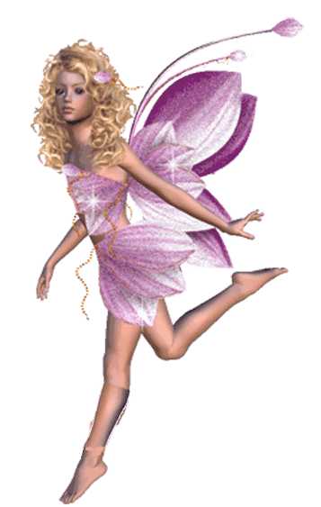

 Nascida e criada na Zona Oeste do Rio de Janeiro, fui por muitos anos obrigada a viver o sonho dos outros, vivendo uma vida que eu não gostava muito, estudando numa escola que eu odiava e não me enquadrava. Conforme fui crescendo, fui me descobrindo e em dando conta de que minha vida seguia um rumo que não me agradava, mas que também só cabia a mim mudar isso. Foi quando decidi sair do Ensino Médio no primeiro ano (mesmo que estivesse em um colégio incrível, de nada importava se não me sentia naquele ambiente), me formar pelo ENCCEJA e entrar na faculdade, pois acreditava que essa meta me motivaria a mudar minha visão de vida. E isso realmente aconteceu! Começando em agosto de 2018, lá estava eu como caloura da graduação em Produção Cultural. O caminho não foi fácil, mas nem se compara com a dificuldade do trajeto, onde eu levo cerca de 3 horas tanto para ir, quanto para voltar. Mas tudo parecia valer a pena até chegar a pandemia de 2020, que provocou uma bagunça em escala mundial nas mais diversas áreas sociais, individuais e mentais. Isso me fez repensar novamente a minha vida e escolhas, mas o momento em quarentena foi de progresso pessoal. Abri meus olhos para novas áreas, fiz um curso voltado a um segmento da área de Estética e até cheguei cogitar seguir essa carreira, mas (sempre ele) enquanto me aprofundava naquele assunto, "meio que" não me enxergava ali. Me deparei novamente sufocada pela pergunta "Quem sou eu?", pois, aos 20 anos, a gente já acha que precisa ser alguma coisa, ainda mais quando somos "pressionados ao sucesso". Agradeço à mim mesma por ter exercitado minha autonomia desde de muita nova, pois apenas sendo resiliente pude ser capaz de buscar conhecimento e auto-conhecimento para entender que nada cai do céu, inclusive seu plano de carreira e futuro. Sendo assim, a pandemia foi o momento em que pude me enxergar de dentro para você e me reconhecer múltipla, capaz de muito ao mesmo tempo e não necessariamente seguindo um único caminho, mas sendo capaz de descobrir vários. Então, quando penso em quem sou eu, penso que sou aquilo que construo com minhas ações e pensamentos, todo dia tentando ser melhor naquilo que eu acredito, seguindo a minha própria alma (soul).